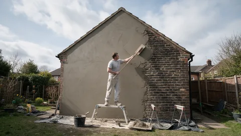
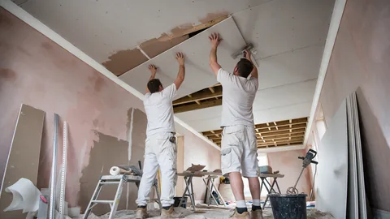
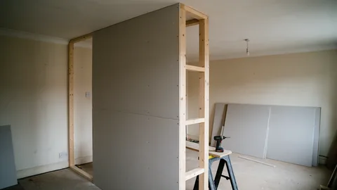

What we do
Walls, ceilings and what is under them.
Six kinds of job, and the difference between two of them is worth more than everything else on this page. Somebody rings for a skim, we tap the walls, and two of the four have let go of the brick. Skimming those would have looked beautiful for about two years. Here is each job on its own.
The six
One at a time.
 Generated photo
Generated photoSkimming walls and ceilings
A thin finish coat over plaster that is already sound, two passes, flat enough that the light across it shows nothing.
 Generated photo
Generated photoFull replastering
Old plaster off back to the brick, the background sorted, an undercoat ruled flat, then the finish. For walls a skim would only follow.

Generated photoRendering
Sand and cement in two coats, or a modern silicone thin coat that comes coloured through. The wall underneath decides which.

Generated photoCeiling repairs
A patch where a patch will hold, a new board and skim where the key has gone. After a leak, after artex, or after somebody else's.
 Generated photo
Generated photoCoving and cornice
Plain coving run and mitred so you cannot find the joints, or an ornate cornice matched and run back in by hand.

Generated photoDry lining and plasterboard
Board on studs, battens or dabs, taped and skimmed. New walls, cold walls and ceilings that want starting again.
The coats
What is actually on your wall.
Four layers, and only one of them is the bit people talk about. Knowing which one has failed is knowing what the job is.
What we do not do
Worth saying out loud.
Skim over blown plaster
If a wall sounds hollow when you tap it, the plaster has let go of the background and it has to come off. A finish coat on top of it buys a year or two and then the whole lot comes away together. That is the single most common thing we say no to.
Plaster over damp
Plaster hides damp, it never cures it. A tide mark, salts on the surface, flaking paint or black mould in a corner means the cause gets found first, by whoever needs to find it. Then we come and do the wall properly.
Touch untested artex
Artex from before the year two thousand can contain asbestos in the coating. Nobody should sand, scrape or dry remove it on a guess. Get it tested, and if it comes back positive the removal is a licensed firm's job rather than ours.
Not sure which of those you need?
Most people are not, and from the paper it all looks the same. Tell us what you can see and we will tap them at the visit.